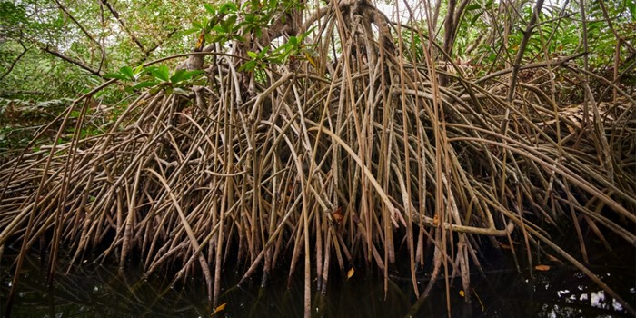
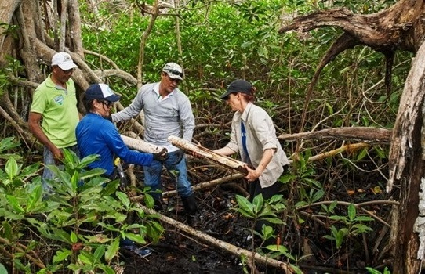

A Apple está ajudando a preservar uma área de 27 mil acres, cerca de 110 mil metros quadrados, na Colômbia. O local é uma floresta de manguezal banhada pelo mar do Caribe e situada em torno da Baía de Cispatá. O objetivo da companhia é reduzir a emissão de gás carbônico na atmosfera.
Em 2018, a Apple anunciou que 100% da energia elétrica utilizada em seus edifícios viria de fontes renováveis e, agora, também incentiva as empresas parceiras a trilhar o mesmo caminho, assim como busca novas formas de reciclar produtos para extrair cada vez menos matéria prima da natureza.
Fonte Imagem: Apple
Como a companhia já está fazendo seu dever na área tecnológica, ela resolveu investir na preservação de florestas, o que é uma ótima estratégia devido ao baixo custo. Colocar uma máquina que limpa o ar em funcionamento é extremamente caro perto do que se pode fazer aplicando esse dinheiro diretamente na natureza.
Sem contar que, de acordo com Lisa Jackson, vice-presidente de iniciativas ambientais, sociais e políticas da Apple, as florestas de manguezal podem absorver e armazenar até 10 vezes mais carbono do que florestas de áreas não inundadas.
Se levarmos em consideração que perdemos metade destas florestas em todo o mundo desde a década de 1940, podemos ter uma ideia da quantidade de CO2 da qual a atmosfera estaria sendo poupada nos dias de hoje caso esses manguezais estivessem intactos.
Fonte Imagem : Apple
M. Sanjayan, CEO da Conservation International, organização sem fins lucrativos que faz parceria com a Apple, afirmou que a destruição dos manguezais realizada no período de um libera até 1 bilhão de toneladas métricas de CO2 na atmosfera — isso representa 6% das emissões globais de gás carbônico neste período.
Este trabalho da Apple na Colômbia começou em 2018 e parte do investimento feito pela empresa envolve a reeducação ambiental das comunidades que vivem da floresta. Além da Colômbia, a Maçã ainda mantém projetos de preservação de florestas na China e nos Estados Unidos.
Agora, a Apple espera que seus esforços para a preservação do meio ambiente sejam copiados por outras empresas.
Fonte Notícia: Tecmundo